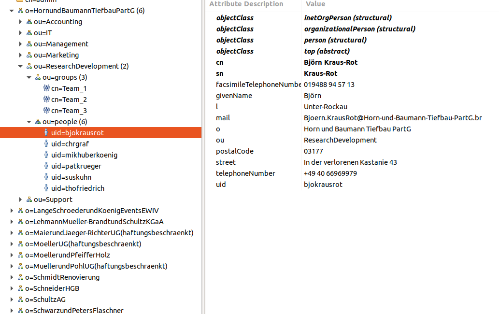

Generator für LDIF Dateien zum Test von Verzeichnisdiensten

Ich hatte hier in letzter Zeit verschiedentlich auf einen Docker-Container hingewiesen, der es erlaubt, schnell einfache LDAP-Tests durchzuführen. Ich habe das Repository inzwischen geforkt und einige weitere Beispieldatensätze aus dem Internet eingefügt - das reichte mir aber noch nicht...
Ich hatte meinen Testdatengenerator in der letzten Zeit um die Möglichkeit erweitert, bestimmte Zielformate zu bedienen - konkret ging es dabei um XML und JSON (OpenAPI).
Ich habe - nach Studium einiger relevanter RFCs entschieden, dass ich die bereits in meinem Generator-Framework enthaltenen Funktionalitäten mit wenig Aufwand dazu benutzen können sollte, hinreichend komplexe LDIF-Dateien zum Import in Verzeichnisdienste wie zum Beispiel OpenLDAP zu erzeugen.
"Hinreichend" komplex bedeutete hierbei folgende Anforderungen:
- memberof-Overlay nutzen
- Unterhalb der Root mehrere Organisationen
- Für jede Organisation mehrere fachliche Organisationseinheiten
- Unter jeder dieser Organisationseinheiten 2 technische Organisationseinheiten (people und groups)
- Unter mindestens einer der technischen Organisationseinheiten Einrichten midestens einer groupOfNames zum Testen des memberof-Overlays
Es stellte sich heraus, dass man in einem solchen Projekt noch jede Menge Dinge über Verzeichnisdienste im Allgemeinen und OpenLDAP im Besonderen lernen kann. Nichtsdestotrotz habe ich geschafft, was ich mir vorgenommen habe, was man an einem Screenshot aus Apache Directory Studio erahnen kann:

Generierte Daten in OpenLDAP importiert und mit Apache Directory Studio dargestelltMit ein wenig Geduld könnte man die Datensätze weiter anreichern - momentan genügt mir der Umfang erst einmal. Ich konnte wie bereits unter den Anforderungen dargelegt damit erfolgreich das memberof-Overlay testen und die vor allem auch aus der sQLshell heraus.
Ich habe hier noch einige Links zusammengetragen, die mich bei Implementierung und Tests unterstützt haben:
Links


Vor 5 Jahren hier im Blog
-
Fährnisse des Buildprozesses unter Windows
17.07.2019
Nachdem ich begonnen hatte, mich mit der Beschleunigung der Berechnung des Mandelbrot-Fraktals unter Zuhilfenahme der Shadereinheiten in Graphikkarten zu beschäftigen und erste Erfolge feiern konnte, wollte ich das mal auf einer richtigen Graphikkarte ausprobieren...
Weiterlesen...
Tags
Android Basteln C und C++ Chaos Datenbanken Docker dWb+ ESP Wifi Garten Geo Git(lab|hub) Go GUI Gui Hardware Java Jupyter Komponenten Links Linux Markdown Markup Music Numerik PKI-X.509-CA Python QBrowser Rants Raspi Revisited Security Software-Test sQLshell TeleGrafana Verschiedenes Video Virtualisierung Windows Upcoming...
Neueste Artikel
- Datenvalidierung UTF8 mit BiDi-Steuerzeichen (TrojanSource 2.0)
Ich bin heute nochmal inspiriert worden, weiter über die Trojan Source Vulnerability nachzudenken. Meiner Meinung nach bestehen hier noch Probleme - speziell bei Nutzereingaben oder Daten, die über externe Schnittstellen ampfangen werden.
Weiterlesen... - OpenStreetMap Navi als Docker-Container
Ich habe die auf OpenStreetMap basierende OpenSource Navigationslösung Graphhopper in einen Docker-Container gepackt und als neuestes Mitglied in meinem Docker-Zoo willkommen geheißen.
Weiterlesen... - SQL-Aggregatfunktionen in SQLite als BeanShell-Scripts
Ich habe neulich über eine Möglichkeit berichtet, SQLite mittels der sQLshell und Beanshell-Skripten um SQL-Funktionen zu erweitern. In diesem Artikel versprach ich auch, über eine solche Möglichkeit für Aggregatfunktionen zu berichten.
Weiterlesen...
Manche nennen es Blog, manche Web-Seite - ich schreibe hier hin und wieder über meine Erlebnisse, Rückschläge und Erleuchtungen bei meinen Hobbies.
Wer daran teilhaben und eventuell sogar davon profitieren möchte, muß damit leben, daß ich hin und wieder kleine Ausflüge in Bereiche mache, die nichts mit IT, Administration oder Softwareentwicklung zu tun haben.
Ich wünsche allen Lesern viel Spaß und hin und wieder einen kleinen AHA!-Effekt...
PS: Meine öffentlichen GitHub-Repositories findet man hier - meine öffentlichen GitLab-Repositories finden sich dagegen hier.